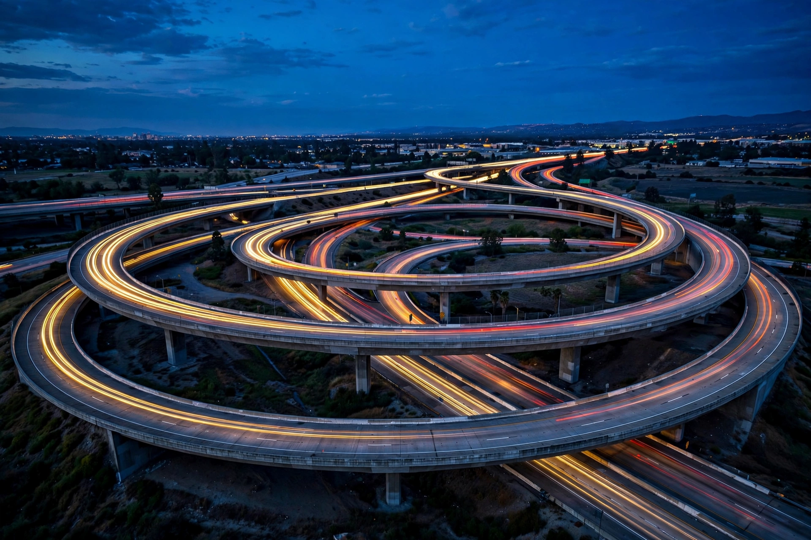

From Wikipedia, the free encyclopedia
| Interstate Highway System | |
|---|---|
| Country | United States |
| Created | Federal-Aid Highway Act of 1956 |
| Length | About 46,876 miles (75,440 km) |

The Interstate Highway System is a network of controlled-access highways forming the national freeway system of the United States, authorised in 1956 under President Eisenhower and built over the following decades — the largest public works project in American history.
Numbered in red-white-and-blue shields, interstates standardised design (wide lanes, no at-grade crossings) and remade freight, suburbs and road trips (see Road and Highway). Defence was an official rationale; critics note urban neighbourhoods destroyed for inner-city segments, now sometimes removed or capped.